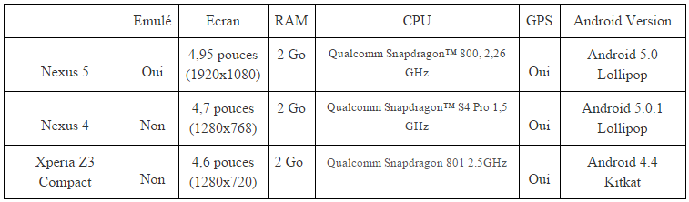
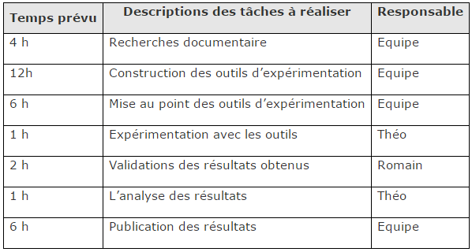

Proposition de recherche
Sujet
Le sujet a pour but de créer une application de météorologie “avancée”. En quoi consiste-elle et en quoi est-elle “avancée” ? Tout d’abord son but premier est évident est de donner la météo, plusieurs options sont disponible ici, soit on entre un lieu dans l’application et celle-ci récupère la météo du lieu en particulier, soit l’application nous geolocalisé pour afficher la météo à l’ endroit où nous nous trouvons. Ensuite l’application entretiendra une base de données pour afficher la dernière mise à jour météo récupéré sans avoir besoin de connections internet. Et pour finir la fonctionnalité la plus “avancée”, est que l’application sera capable de détecter les changements de température et de nous avertir en cas de changement important. Par exemple il fait beau pendant 5 jours, le 6eme jour il fait froid dans ce cas-là l’application sera capable de détecter le changement et de nous avertir via des notifications Android.
Enjeux
- Apprendre la programmation sur Android, comprendre les concepts d’Android car ce type de programmation est très différente de celle sur machine conventionnelle (mémoire limitée, fonctionnement des processus, capteurs…)
- Apprendre à utiliser une API, dans le cadre du projet, une API de météo (OpenWeatherMap)
- Créer une application utile, efficace, avec des nouveautés par rapport à ce qui existe déjà
- Il n’existe pas d’application uniquement dédié a la météo sur Android de base, c’est pourquoi il en existe une multitude sur le PlayStore, notre application se veut simple, rapide, efficace et innovante sur ce marché.
- Dans le futur, cette application pourra être améliorée sur les algorithmes utilisés pour la détection de variation, sur les données qu’elle affichera, sur les données pris en compte dans les algorithmes… Autant dire que l’application pourra évoluer et être perfectionner sans cesse.
Objectifs
Notre objectif est d’obtenir une application météo comme décrit dans la description du sujet. Pour cela nous nous sommes fixés des objectifs qui sont les suivants :
- Créer une application Android
- Détecter les changements climatiques grâce à un algorithme
- Stocker dans une base de données tous les paramètres nécessaires
Experimentation
Dans le cadre du cours de Nouvelles technologies, la recherche s’effectuera à l’aide d’outils d’expérimentation. L’outil que nous allons développer est une application Android avec une gestion de la sauvegarde des différentes données afin d’utiliser un algorithme de détection de variation. Nous effectuerons ce développement à but éducatif car nous n’avons pas eu de cours de développement mobile et que dans le monde d’aujourd’hui c’est une qualification très demandée. Nous pourrons ensuite comparer notre application par rapport à d’autres applications météorologique du Google PlayStore. Les étapes essentielles à notre réussite:
- Créer une classe de base Java pour le support des autres classes
- Créer un service qui tourne en tache de fond
- Coder un système de géolocalisation (via GPS et Wifi)
- Créer une interface graphique
- Créer une classe qui gère la base de données (SQLite)
- Créer une classe qui gère les notifications
- Récupérer la météo actuelle (via l’API OpenWeatherMap)
- Récupérer les prévisions météorologiques (via l’API OpenWeatherMap)
- Créer une classe qui gère l’algorithme de détection de changement
Limites
Au vu du temps qui nous est disponible nous devons nous fixer des objectifs réalisables. Nous comptons développer une application qui affiche la météo, avec un service en tache de fond pour actualiser les données, un stockage de la dernière météo disponible et également un début d’algorithme répondant au critère préciser au-dessus même si il ne pour
Incertitudes
Parmi les incertitudes notables, nous relevons:
- Le langage Java spécifique à Android
- La maitrise de l’API OpenWeatherMap
- L’utilisation de base de données SQLite
- Arriver à tout faire fonctionner ensemble sur un téléphone Android
Ressources
Le développement s’effectuera sur nos deux PC portables qui sont tous deux équipés d’Intel Core I7 afin de permettre une compilation rapide. L’IDE qui va être utilisé durant toute la durée du projet est Android Studio, il est basé sur le célèbre IntelliJ IDEA et est proposé gratuitement par Google. Au niveau des tests, nous les effectuerons avec trois téléphones différents qui sont le Nexus 5, le Nexus 4 et le Sony Xperia Z3 compact, voici un tableau comparatif des téléphones avec les caractéristiques qui nous intéressent. 
Planification
